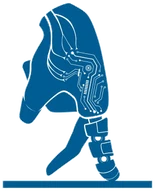

Benefits
- Benefit
-
Her phantom limb pain fell from 5 to 3
Awaiting review
- Outcome identifiers
-
Individual benefits have no separate identifiers.
Not reviewedUnresolved: supporting details for Outcome identifiers
Robotics 2023).
- Category
-
Improved Physical Health
Awaiting review
- Status
-
Reported. The case report states that phantom limb pain fell from 5 to 3 and that stump pain disappeared after the intervention, and it states that the patient still uses the hand in daily life. These are realized results.
Fully reviewed: supporting details for Status
Review date: 29 October 2026.
Sources: research.chalmers.se
- Beneficiary groups
-
People.
Awaiting review
- Beneficiaries
-
The people or organizations that benefited are not established.
Not reviewedUnresolved: supporting details for Beneficiaries
Robotics 2023).
- Reach
-
One person benefited: Karin, the single patient in the case report. [1] [2] [3] [4] [5] [6] [7] [8]
- Distribution and access
-
How the benefit was distributed is unclear.
Not reviewedUnresolved: supporting details for Distribution and access
Robotics 2023).
- Duration
-
The report describes more than three years of daily hand use, with continued use at publication.
Partly reviewed: supporting details for Duration
- Expected?
-
Yes
Awaiting review
AI system
- System
-
Transradial neuromusculoskeletal prosthesis: osseointegrated titanium implants with implanted muscle and nerve electrodes, an embedded controller, and the Prensilia Mia Hand
Awaiting review
- Model
-
The underlying model is not identified.
Not reviewedUnresolved: supporting details for Model
Robotics 2023).
- Release
-
Exact release not established.
Awaiting review
- Application developer
-

Center for Bionics and Pain Research ( Chalmers University of Technology and Sahlgrenska University Hospital, Mölndal) with Integrum AB; hand by Scuola Superiore Sant'Anna and Prensilia SRL, under the EU DeTOP project
Chalmers University of Technology and Sahlgrenska University Hospital, Mölndal) with Integrum AB; hand by Scuola Superiore Sant'Anna and Prensilia SRL, under the EU DeTOP projectAwaiting review
- Role
-
The role of each component in Transradial neuromusculoskeletal prosthesis: osseointegrated titanium implants with implanted muscle and nerve electrodes, an embedded controller, and the Prensilia Mia Hand remains unassessed.
Not reviewedUnresolved: supporting details for Role
Robotics 2023).
- Configuration
-
The participant used a Mia Hand.
Awaiting review
- Inputs and outputs
-
The inputs and outputs of Transradial neuromusculoskeletal prosthesis: osseointegrated titanium implants with implanted muscle and nerve electrodes, an embedded controller, and the Prensilia Mia Hand have not been specified.
Not reviewedUnresolved: supporting details for Inputs and outputs
Robotics 2023).
- Autonomy
-
In daily use, two implanted-electrode signals directly opened and closed the hand, and a sustained opening signal changed grasps. More complex decoding was tested separately in the laboratory.
Partly reviewed: supporting details for Autonomy
Ai_role: direct daily control versus laboratory Motion Tests.
Review date: 27 October 2026.
Sources: [1]
- Workflow
-
Osseointegrated titanium implants giving skeletal attachment and a wired path from implanted electrodes to the hand. Surgical reconstruction that transfers severed nerves to free muscle grafts, adding myoelectric sites and treating neuropathic pain. A self-contained prosthesis with an embedded controller and battery that needs no external equipment, so it can be worn all day.
Awaiting review
- Human oversight
-
The patient controlled the hand through signals from her implanted electrodes.
Awaiting review
- Relation to AI
-
The benefit comes from the whole neuromusculoskeletal interface, not from a learned model alone. The paper reports that in daily life the hand ran on direct control. Signals from two implanted electrodes mapped to open and close, and a sustained open signal switched grasps. Decoding of six movements (100 percent completion) and of five individual fingers (up to 95 percent) was shown in laboratory Motion Tests. The paper never uses the words AI or machine learning. The AI framing comes from the institutions' release (Brånemark: osseointegration, reconstructive surgery, implanted electrodes “and AI”). It also comes from CNN (“AI algorithms inside the prosthesis interpret the signal”). Keep the record only if that framing is acceptable as the AI claim.
Awaiting review
- AI contribution
-
Implanted electrodes let the patient control the prosthetic hand. Daily use relied on direct signals for opening, closing, and changing the grasp; more complex decoding was demonstrated in laboratory tests.
Awaiting review
Measurement
- Studies
-
Case study.
Fully reviewed: supporting details for Studies
Review date: 29 October 2026.
Sources: research.chalmers.se
- Study design
-
Case study.
Fully reviewed: supporting details for Study design
Review date: 29 October 2026.
Sources: research.chalmers.se
- Measurement
-
Patient-reported questionnaires (Questionnaire for Phantom Limb Pain Tracking, EQ-5D-5L, DASH, Q-ULA) and function tests (ACMC, SHAP) given before and after the intervention.
Fully reviewed: supporting details for Measurement
Review date: 29 October 2026.
Sources: research.chalmers.se
- Setting and sample
-
One woman with a right transradial amputation, treated at Sahlgrenska University Hospital, Sweden; study from September 2018 to April 2021.
Fully reviewed: supporting details for Setting and sample
Review date: 29 October 2026.
Sources: research.chalmers.se
- Measures
-
Phantom limb pain and stump pain intensity on a 0 to 10 scale; EQ-5D-5L index.
Fully reviewed: supporting details for Measures
Review date: 29 October 2026.
Sources: research.chalmers.se
- Comparison
-
The same patient 6 weeks before the intervention, when she used a socket prosthesis with surface electrodes.
Fully reviewed: supporting details for Comparison
Review date: 29 October 2026.
Sources: research.chalmers.se
- Results
-
Phantom limb pain fell from 5 to 3; stump pain fell from 6 to 0; EQ-5D-5L rose from 0.23 to 0.63.
Fully reviewed: supporting details for Results
Review date: 29 October 2026.
Sources: research.chalmers.se
- Additional value from AI
-
Not isolated. The paper attributes the outcome to the whole implant, surgery and electrode system and does not test a learned decoder against an alternative.
Fully reviewed: supporting details for Additional value from AI
Review date: 29 October 2026.
Sources: research.chalmers.se
- Limitations
-
One patient, no control group, no blinding; the authors include developers and shareholders of Integrum AB and Prensilia SRL.
Fully reviewed: supporting details for Limitations
Review date: 29 October 2026.
Sources: research.chalmers.se
- Denominators
-
Assessments 6 weeks before and 123 weeks after the intervention; by publication she had used the hand in daily life for more than 3 years.
Fully reviewed: supporting details for Denominators
Review date: 29 October 2026.
Sources: research.chalmers.se
- Materials for replication
-
The evaluation does not state this detail.
Partly reviewedUnresolved: supporting details for Materials for replication
Review date: 29 October 2026.
Sources: research.chalmers.se
Money
- Kind of value
-
The kind of monetary value is unclear.
- Amount
-
The monetary value is not established.
- Currency and prices
-
The currency and price basis are unclear.
- Period and unit
-
The period and unit of the monetary estimate are unclear.
- Realization
-
Whether the monetary value was realized is unclear.
- Recipients and payers
-
The recipients and payers are unclear.
- Gross or net
-
Whether the monetary figure includes costs is unclear.
- Included costs
-
The costs included in the estimate are unclear.
- Comparison
-
The financial comparison is not established.
- Method
-
The method used to calculate monetary value is unclear.
People and places
- Participants
-
Developer: Center for Bionics and Pain Research (
Chalmers University of Technology and Sahlgrenska University Hospital, Mölndal) with Integrum AB; hand by Scuola Superiore Sant'Anna and Prensilia SRL, under the EU DeTOP project. Operator: Sahlgrenska University Hospital, Sweden (surgery led by Rickard Brånemark and Paolo Sassu).Awaiting review
- Jurisdictions
-
Benefit: Mölndal,
 Sweden. Developer: Sweden. Operator: Sweden.
Sweden. Developer: Sweden. Operator: Sweden.Awaiting review
- Ownership and control
-
Ownership and control for Center for Bionics and Pain Research (Chalmers University of Technology and Sahlgrenska University Hospital, Mölndal) with Integrum AB; hand by Scuola Superiore Sant'Anna and Prensilia SRL, under the EU DeTOP project are not separately documented. A dated registry or organizational source is needed where control is material; headquarters alone does not establish ownership, nationality, or state control.
Not reviewedUnresolved: supporting details for Ownership and control
Robotics 2023).
- Dependencies
-
The self-contained hand combined skeletal attachment, transferred nerves and muscle grafts, implanted electrodes, an embedded controller, and a battery.
Partly reviewed: supporting details for Dependencies
Account and replication: surgical and embedded hardware components.
Review date: 27 October 2026.
Sources: [1]
- Cross-border connections
-
Cross-border flows associated with Transradial neuromusculoskeletal prosthesis: osseointegrated titanium implants with implanted muscle and nerve electrodes, an embedded controller, and the Prensilia Mia Hand have not been assessed. The locations of the participants alone do not establish a flow.
Not reviewedUnresolved: supporting details for Cross-border connections
Robotics 2023).
Follow-up
- Conditions for replication
-
The fixtures must osseointegrate. Here the radial fixture failed, was removed after 5 months and reimplanted with a larger diameter. Implanted electrodes must stay within working range for years. One e-abutment screw broke after 3.5 years and was replaced. Outcomes are from one patient with no control group, so the effect size is not established beyond this case.
Awaiting review
- Replication attempts
-
Whether others have replicated the result is unclear.
- Later findings
-
The October 2023 coverage reports more than three years of daily use up to publication; nothing dated after the paper was found.
Awaiting review
- Availability
-
Access to Transradial neuromusculoskeletal prosthesis: osseointegrated titanium implants with implanted muscle and nerve electrodes, an embedded controller, and the Prensilia Mia Hand has not been established for a stated date. A published demonstration does not establish public availability.
Not reviewedUnresolved: supporting details for Availability
Robotics 2023).
- Institutional decision
-
A relevant institutional decision has not been established.
- Grounds
-
The grounds for an institutional decision are unclear.
- Action and result
-
The result of an institutional decision is not established.
Evidence
- Source numbers
-
AIBD-0121-source-0001–0008
Awaiting review
- Citations
-
Numbered references below.
Awaiting review
- Language
-
The source languages and any translation history are unclear.
- Source relationships
-
Developer, Independent
Awaiting review
- Original evidence
-
The pain and quality-of-life figures come from the makers' case report in Science Robotics of 11 October 2023. The institutional press release and the news reports of October 2023 relay that paper, and the DeTOP consortium's news item of 5 February 2019 announced the implantation. [1] [2] [3] [4] [5] [6] [7] [8]
- Access and versions
-
The case report is cited at its DOI, and an open-access manuscript is at research.chalmers.se/publication/537965. The press release from the Sant'Anna School of Advanced Studies is cited in its reprint by Medical Xpress. [1] [2] [3] [4] [5] [6] [7] [8]
- Supported findings
-
Swedish amputee Karin uses a bone-anchored, nerve-linked Mia Hand daily; phantom pain fell 5 to 3, stump pain gone (Sci. Robotics 2023).
- Evidence links
-
The record attributes 8 quotations to their cited sources. Their support for the particular benefit and AI-contribution claims remains unclassified.
- Evidence strength
-
Independently reported. Sources: five independent news reports, the makers' peer-reviewed study and two press releases from the makers. The cited evidence includes no independent study or report and no finding by a regulator or court. [1] [2] [3] [4] [5] [6] [7] [8]
- Missing evidence
-
The observed pain and functional improvements concern the complete implanted prosthetic intervention. The account states that daily use employed direct control, while advanced decoding was tested in the laboratory. It therefore does not establish that learned control caused the everyday improvement.
Grades
- Assessed benefits
-
People.
Awaiting review
- Depth
-
People: 3.
Awaiting review
- Reasons
-
People: The authors report that her phantom limb pain fell from 5 to 3 and that her stump pain fell from 6 to 0. Pain no longer interfered with her sleep. Her score on the EQ-5D-5L quality-of-life index rose from 0.23 to 0.63, and she had used the hand daily for more than three years. Karin says that the research “has given me a better life” and that she needs much less medication. It changed the life of one identifiable person, and the evidence comes from a single-patient study without a control group.
Awaiting review
- Observed or intended
-
Reported. The case report states that phantom limb pain fell from 5 to 3 and that stump pain disappeared after the intervention, and it states that the patient still uses the hand in daily life. These are realized results.
Fully reviewed: supporting details for Observed or intended
Review date: 29 October 2026.
Sources: research.chalmers.se
- Rubric
-
The version of the assessment rubric is unknown.
Not reviewedUnresolved
- Assessor and date
-
AIBD, 29 October 2026.
- Alternative assessments
-
Alternative ratings have not been established.
Not reviewedUnresolved
- Fill
-
Independently reported
Awaiting review
Entry details
- Scope
-
The record documents the outcome for one named patient, Karin, as reported in a single-patient case report. [1]
Fully reviewed: supporting details for Scope
Review date: 29 October 2026.
Sources: [1]
- Related entries
-
No incident in the AI Incident Database snapshot of 26 October 2026 concerns the same kind of system harming the same kind of stakeholder.
Partly reviewedUnresolved: supporting details for Related entries
Compared with the incidents in the AI Incident Database snapshot of 26 October 2026.
- Field
-
Healthcare (upper-limb prosthetics and phantom limb pain). Academic clinical research, single-patient implementation.
Awaiting review
- Purpose
-
The prosthesis was built to give reliable control, feedback and attachment after amputation, with surgical reconstruction to add myoelectric sites and treat neuropathic pain. The reported function and pain outcomes were that purpose.
Awaiting review
- Dates
-
Observed 2021. The pain and quality-of-life figures come from assessments made 123 weeks after the intervention, within a study that ran from September 2018 to April 2021, so they fall in early 2021. No source gives the month. The October 2023 date is the publication of the paper.
Fully reviewed: supporting details for Dates
Review date: 29 October 2026.
Sources: research.chalmers.se
- Stage
-
The system was used in a pilot. The prosthesis was a first-in-human clinical implementation in one patient inside a research study, used at home in daily life.
Fully reviewed: supporting details for Stage
Review date: 29 October 2026.
Sources: research.chalmers.se
- Version
-
SHA-256: d186b46e4e96…
Awaiting review: supporting details for Version
SHA-256 of the public record, its assessments, and its displayed answers and notes, excluding its own identifier and the derived coverage summary.
References
- Other identifiers
-
Oecd_aim: 2023-10-09-84b0.
Awaiting review
- Category mappings
-
The benefit falls under Trustible’s “Improved Physical Health” category.
Awaiting review: supporting details for Category mappings
The retained benefit category is linked to its published definition. OECD task correspondences are qualified inferences from the stated system and purpose, with their textual basis retained.
- Citable summary
-
Swedish amputee Karin uses a bone-anchored, nerve-linked Mia Hand daily; phantom pain fell 5 to 3, stump pain gone (Sci. Robotics 2023). The observed pain and functional improvements concern the complete implanted prosthetic intervention. The account states that daily use employed direct control, while advanced decoding was tested in the laboratory. It therefore does not establish that learned control caused the everyday improvement.
- Revisions
-
7 revisions. Latest: 29 October 2026.
Awaiting review
Sources
-
Peer-reviewed study Developer
Ortiz-Catalan M., Zbinden J., Millenaar J., et al. (2023). A highly integrated bionic hand with neural control and feedback for use in daily life. Science Robotics 8(83): eadf7360. PMID 37820004. Co-authors include Integrum AB and Prensilia SRL staff; open-access manuscript at research.chalmers.se/publication/537965.
original Science Robotics manuscript. Daily use employed two-site direct opening/closing and a sustained opening signal to switch grasp. Complex neural decoding was assessed separately. Fixture and screw failures required replacement. Prosthesis control, adverse events, quality-of-life and pain outcomes
Original Science Robotics manuscript
Phantom limb pain intensity decreased from 5 to 3, and stump pain vanished entirely compared with 6 of 10 before the intervention.
-
News report Independent author
Christensen J. / CNN via KEYT (2023). It's not Star Wars-level tech yet, but doctors get a step closer to a bionic hand with special surgery and AI. CNN Health; quotes an independent neurosurgeon, Jorge Gonzalez-Martinez of the University of Pittsburgh.
AI algorithms inside the prosthesis interpret the signal and allow her to move the bionic hand.
-
Press release Developer
Sant'Anna School of Advanced Studies via Medical Xpress (2023). Bionic hand merges with user's nervous and skeletal systems. Institutional release reprinted by Medical Xpress.
The robotic hand developed by Prensilia, namely Mia Hand, featured unique motor and sensory components that allowed the user to carry out 80% of the activities of daily living.
-
News report Independent author
Paul A. / Popular Science (2023). Titanium-fused bone tissue connects this bionic hand directly to a patient's nerves. Popular Science.
By combining osseointegration with reconstructive surgery, implanted electrodes, and AI, we can restore human function in an unprecedented way
-
News report Independent author
Cara E. / Gizmodo (2023). Woman's Experimental Bionic Hand Passes Major Test With Flying Colors. Gizmodo.
Karin was the first person with below-elbow amputation who received this new concept of a highly integrated bionic hand that can be used independently and reliably in daily life.
-
News report Independent author
Thompson B. / New Atlas (2023). Groundbreaking bionic hand restores quality of life to amputee. New Atlas.
Karin is now using somewhat the same neural resources to control the prosthesis as she did for her missing biological hand.
-
News report Independent author
ScienceAlert (2023). Revolutionary Bionic Hand Fuses With Woman's Bones, Muscles, And Nerves. ScienceAlert.
I have better control over my prosthesis, but above all, my pain has decreased. Today, I need much less medication.
-
Press release Developer
DeTOP project (2019). The first dexterous and sentient hand prosthesis has been successfully implanted. News item on the EU Horizon 2020 consortium site (coordinator Scuola Superiore Sant'Anna; partners include Integrum AB and Prensilia).
A female Swedish patient with hand amputation has become the first recipient of an osseo-neuromuscular implant to control a dexterous hand prosthesis.